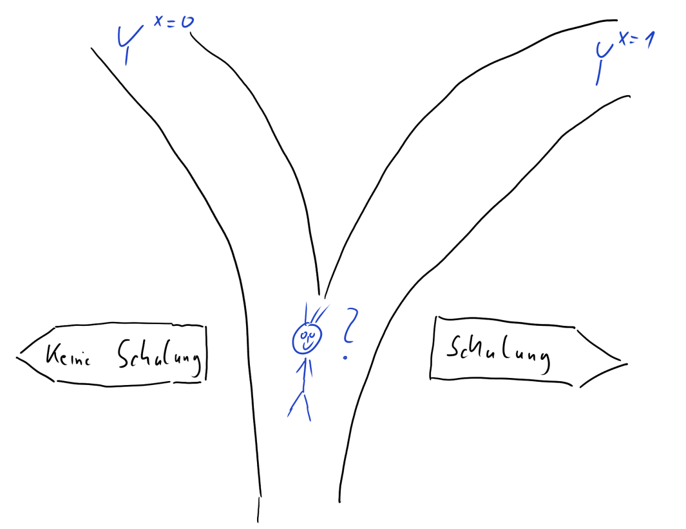

Lernziele
In diesem Modul lernen Sie:
was ein potenzielles Ergebnis (Potential Outcome) ist;
was ein Counterfactual ist;
wie kausale Effekte definiert werden können;
warum die Bestimmung von kausalen Effekten so herausfordernd ist.
Individueller kausaler Effekt
Stellen Sie sich folgende Situation vor: Am Ende Ihrer Ausbildungszeit wird Ihnen die Teilnahme an einer freiwilligen Schulung zum Thema Gehaltsverhandlungen angeboten.
Würden Sie teilnehmen?
Für Ihre Entscheidung ist vermutlich relevant, ob Sie davon ausgehen, dass die Teilnahme Ihr zukünftiges Gehalt tatsächlich verbessern wird.
Wie würden Sie für sich diesen individuellen kausalen Effekt der Teilnahme an der Schulung auf Ihr Gehalt definieren, d. h., was bringt Ihnen die Schulung finanziell?
Denken Sie bitte kurz darüber nach und klicken Sie erst dann auf
Weiter
Eine mögliche Idee wäre es, einfach die Differenz des Gehaltes vor und nach der Schulung zu bilden: Gehalt nach der Schulung minus Gehalt vor der Schulung. Hier ergibt sich aber ein Problem, denn es ist natürlich gut möglich, dass unabhängig von der Schulung Ihr Gehalt mit der Zeit angestiegen wäre.
(Eine ganz ähnliche Situation ergibt sich, wenn man zum Beispiel rausfinden möchte, ob ein bestimmtes Medikament gegen eine Krankheit hilft: Einige Erkrankungen werden von alleine mit der Zeit besser und es wäre ein Fehler, diese Verbesserung spezifischen Maßnahmen zuzuschreiben. Daher spielen Kontrollgruppen in klinischen Studien eine so zentrale Rolle.)
Eine andere Möglichkeit ist es, diesen Effekt als
\[\text{Gehalt mit Schulung} - \text{Gehalt ohne Schulung} \]
zu definieren.
Wenn Sie vor der Entscheidung stehen: Nehme ich an der Schulung teil? gibt es für Ihr Gehalt zwei potenzielle Ergebnisse (englisch: Potential Outcomes):
Gehalt ohneSchulung : \(\color{blue}{Y}^{\color{green}{X=0}}\)Gehalt mitSchulung : \(\color{blue}{Y}^{\color{green}{X=1}}\)
\(\color{blue}{Y}\) ist die
Wirkung, das Ergebnis, also hier das

Der individuelle kausale Effekt \(\color{orange}{\Delta}_i\) (griechisch: Delta) der Schulung ergibt sich dann als die Differenz zwischen diesen beiden potenziellen Ergebnissen:
\[\color{orange}{\Delta}_i = \color{blue}{Y}^{\color{green}{X=1}}_i - \color{blue}{Y}^{\color{green}{X=0}}_i\]
Wobei
\(i\) für die einzelne Beobachtung, hier die einzelne Person, steht;
\(\color{blue}{Y}_i\) für das
Gehalt von \(i\);\(\color{green}{X}\) für die Teilnahme an der
Schulung ; dabei ist \(\color{green}{X_i=1}\) wenn \(i\) teilnimmt und \(\color{green}{X_i=0}\) wenn \(i\) nicht teilnimmt.
Ein fiktives Beispiel
Schauen wir uns einmal eine fiktive Gehaltstabelle mit potenziellen Ergebnissen an:
i: Nummer der Person;gehalt1: \(\color{blue}{Y}^{\color{green}{X=1}}\), Gehalt mit Schulung;gehalt0: \(\color{blue}{Y}^{\color{green}{X=0}}\), Gehalt ohne Schulung.
| i | gehalt1 | gehalt0 |
|---|---|---|
| 1 | 2300 | 2200 |
| 2 | 2200 | 2000 |
| 3 | 2100 | 2000 |
| 4 | 2500 | 2100 |
| 5 | 2500 | 2100 |
| 6 | 2100 | 2100 |
| 7 | 2200 | 2100 |
| 8 | 2000 | 2100 |
| 9 | 2000 | 2000 |
| 10 | 2100 | 2100 |
Der individuelle kausale Effekt \(\color{orange}{\Delta}_i\) lässt sich dann
innerhalb der Datentabelle Schulung berechnen als
gehalt1 - gehalt0 (hier in R):
Anmerkung: R ist eine freie Software für die
Datenanalyse. Sie kann von der Seite https://cran.r-project.org/ für
gängige Betriebssysteme heruntergeladen werden. Ergänzend ist die
Nutzung des RStudio Desktop empfehlenswert (https://www.rstudio.com/products/rstudio/download/).
Im Rahmen dieser Module wird außerdem u.a. das Paket mosaic
(https://cran.r-project.org/package=mosaic))
verwendet.
# Paket laden
library(mosaic)
# Datentabelle Schulung um neue Variable "effekt" ergänzen
Schulung <- Schulung %>%
mutate(effekt = gehalt1 - gehalt0)Und damit:
| i | gehalt1 | gehalt0 | effekt |
|---|---|---|---|
| 1 | 2300 | 2200 | 100 |
| 2 | 2200 | 2000 | 200 |
| 3 | 2100 | 2000 | 100 |
| 4 | 2500 | 2100 | 400 |
| 5 | 2500 | 2100 | 400 |
| 6 | 2100 | 2100 | 0 |
| 7 | 2200 | 2100 | 100 |
| 8 | 2000 | 2100 | -100 |
| 9 | 2000 | 2000 | 0 |
| 10 | 2100 | 2100 | 0 |

Sie sehen: häufig sind die individuellen kausalen Effekte positiv – sie können aber auch neutral oder sogar negativ sein.
Das fundamentale Problem der kausalen Inferenz
Das fundamentale Problem der kausalen Inferenz ist, dass wir den
individuellen kausalen Effekt \(\color{orange}{\Delta}_i =
\color{blue}{Y}^{\color{green}{X=1}}_i -
\color{blue}{Y}^{\color{green}{X=0}}_i\) nicht
beobachten können. Es liegt je Beobachtung \(i\) immer nur eines der beiden Potential
Outcomes vor: Entweder \(\color{blue}{Y}^{\color{green}{X=1}}\)
(
Wenn Person \(i\) an der Schulung teilnimmt, liegt uns das Gehalt mit Schulung vor, \(\color{blue}{Y}^{\color{green}{X=1}}_i\), und nicht \(\color{blue}{Y}^{\color{green}{X=0}}_i\)
Wenn Person \(i\) nicht an der Schulung teilnimmt, liegt uns das Gehalt ohne Schulung vor, \(\color{blue}{Y}^{\color{green}{X=0}}_i\), und nicht \(\color{blue}{Y}^{\color{green}{X=1}}_i\)
Der Wert, der nicht beobachtet wird, wird jeweils als Counterfactual bezeichnet; er ist kontrafaktisch in dem Sinne, dass er in der Realität nicht vorliegt.
Für jemanden, der nicht an der Schulung teilgenommen hat, ist das Counterfactual die Antwort auf die Frage: Wie hoch wäre mein Gehalt, wenn ich an der Schulung teilgenommen hätte? Für jemanden der teilgenommen hat, ist das Counterfactual die Antwort auf die Frage: Wie hoch wäre mein Gehalt, wenn ich nicht an der Schulung teilgenommen hätte?
Durchschnittlicher kausaler Effekt
Mal angenommen, wir würden die individuellen kausalen Effekte \(\color{orange}{\Delta}_i\) aber doch kennen
(Variable effekt in unserem R-Beispiel). Dann
könnten wir aus ihnen weitere Größen ableiten, beispielsweise den
durchschnittlichen kausalen Effekt \(\bar{\color{orange}{\Delta}}\), indem wir
alle \(i\) individuellen kausalen
Effekte addieren und diese Summe (\(\sum\)) durch die Anzahl der Beobachtungen
(\(n\)) dividieren:
\[\bar{\color{orange}{\Delta}}=\frac{\sum_{i=1}^n \color{orange}{\Delta}_i}{n}=\frac{\sum_{i=1}^n(\color{blue}{Y}^{\color{green}{X=1}}_i - \color{blue}{Y}^{\color{green}{X=0}}_i)}{n} =\frac{\sum_{i=1}^n\color{blue}{Y}^{\color{green}{X=1}}_i - \sum_{i=1}^n\color{blue}{Y}^{\color{green}{X=0}}_i}{n}=\overline{\color{blue}{Y}}^{\color{green}{X=1}}-\overline{\color{blue}{Y}}^{\color{green}{X=0}}.\]
Die R-Funktion, die diesen arithmetischen Mittelwert
berechnet, lautet mean().
Klicken Sie auf Ausführen, um den durchschnittlichen
kausalen Effekt in unserem fiktiven Beispiel zu berechnen, in dem beide
Potential Outcomes vorliegen.
mean( ~ effekt, data = Schulung)Anmerkung: In mosaic ist die R
Syntax vereinheitlicht:
analyse(y ~ x, data = Daten)Analysiere die Variable y in Abhängigkeit der Variable
x aus der Datentabelle Daten. Welche Funktion
analyse() zur Anwendung kommt, hängt vom Ziel unser Analyse
ab.
Sollte es, wie im vorliegenden Fall, nur eine Variable geben, die zusammengefasst werden soll, kann auch kurz geschrieben werden:
analyse( ~ y, data = Daten)Beachten Sie: Der durchschnittliche kausale Effekt ist positiv, auf Individualebene kann er aber auch negativ sein. \(\bar{\color{orange}{\Delta}}\) ist eine aggegierte Datenzusammenfassung.
Das fundamentale Problem der kausalen Inferenz ist, dass nur eines der Potential Outcomes vorliegt und das nicht vorliegende ein Counterfactual ist. Daher kennen wir in der Praxis weder den individuellen noch den durchschnittlichen kausalen Effekt. Letzterer liegt in unserem Beispiel bei
\[\bar{\color{orange}{\Delta}}=\frac{\sum_{i=1}^n \color{orange}{\Delta}_i}{n}=120.\]
Fehlende Werte
In der Praxis kennen wir zwar nicht beide Potential Outcomes, aber wir wissen innerhalb einer Beobachtungsgruppe, wer an der Schulung teilgenommen hat und wer nicht. Daraus ergibt sich, welches der beiden Potential Outcomes beobachtet ist und welches uns fehlt (das Counterfactual).
In der Praxis sähe unsere fiktive Gehaltstabelle also anders aus –
fehlende Werte werden in R als NA (engl.: not
available, nicht verfügbar) dargestellt.
| i | teilnahme | gehalt0 | gehalt1 |
|---|---|---|---|
| 1 | Ja | NA | 2300 |
| 2 | Ja | NA | 2200 |
| 3 | Ja | NA | 2100 |
| 4 | Nein | 2100 | NA |
| 5 | Ja | NA | 2500 |
| 6 | Ja | NA | 2100 |
| 7 | Ja | NA | 2200 |
| 8 | Nein | 2100 | NA |
| 9 | Nein | 2000 | NA |
| 10 | Nein | 2100 | NA |
In der Regel strukturiert man die Daten so, dass nur eine
Gehaltsvariable – das beobachtete gehalt – sowie eine
Variable zur teilnahme existiert.
| i | teilnahme | gehalt |
|---|---|---|
| 1 | Ja | 2300 |
| 2 | Ja | 2200 |
| 3 | Ja | 2100 |
| 4 | Nein | 2100 |
| 5 | Ja | 2500 |
| 6 | Ja | 2100 |
| 7 | Ja | 2200 |
| 8 | Nein | 2100 |
| 9 | Nein | 2000 |
| 10 | Nein | 2100 |
Schätzung des kausalen Effektes
Anhand der tatsächlich beobachteten Daten können wir zwei Durchschnittsgehälter berechnen: Das Durchschnittsgehalt derjenigen, die teilgenommen haben, und das Durchschnittsgehalt derjenigen, die nicht teilgenommen haben.
mean(gehalt ~ teilnahme, data = Schulung)## Ja Nein
## 2233.333 2075.000\(\bar{\color{blue}{y}}^{\color{green}{x=1}} = 2233.33\)
\(\bar{\color{blue}{y}}^{\color{green}{x=0}} = 2075\)
Anmerkung:
mean(gehalt ~ teilnahme, data = Schulung)Bedeutet aus R mosaic übersetzt:
Berechne den arithmetischen Mittelwert (Funktion mean())
der Variable gehalt (\(y\)) in Abhängigkeit der Variable
teilnahme (\(x\)). Die
dazugehörigen Daten sind in der Datentabelle Schulung.
Nun könnte man versuchen, den durchschnittlichen kausalen Effekt mithilfe dieser beobachteten Werte zu schätzen:
\[\bar{\color{blue}{y}}^{\color{green}{x=1}} - \bar{\color{blue}{y}}^{\color{green}{x=0}} = 2233.33 - 2075 = 158.33\]
Dieser Wert weicht aber substanziell vom wahren durchschnittlichen kausalen Effekt ab, den wir zuvor mithilfe der Potential Outcomes berechnet hatten: \(\bar{\color{orange}{\Delta}} =120\). Bei dieser Abweichung handelt es sich um eine systematische Verzerrung, die auch als Bias bezeichnet wird.
Der naive Vergleich der Mittelwerte überschätzt hier den wahren durchschnittlichen Effekt. In unserem fiktiven Beispiel liegt das daran, dass Personen mit einem höherem Gehaltsinteresse eher an der Schulung teilgenommen haben als die mit einem niedrigeren Interesse.
Erstere hätten aber so oder so, also unabhängig von der Schulung, ein höheres Gehalt erhalten. Hier sind unterschiedliche inhaltliche Erklärungen denkbar (z.B. ein höheres Interesse am Gehalt und damit auch ein anderes Auftreten in Gehaltsverhandlungen).
Kontrollieren Sie diese Aussage, indem Sie den Code so abändern, dass
Sie die Mittelwerte der Potential Outcomes berechnen. Diese befinden
sich im gleichen Datensatz und tragen die Namen gehalt0 und
gehalt1:
Tipp: Einen Lösungshinweis erhalten Sie über den
Hinweise-Button über dem R Code. Anschließend
Nächster Tipp und Sie sehen die Lösung.
mean(gehalt ~ teilnahme, data = Schulung)cat("Potential Outcomes: Durchschnittliches Gehalt ohne Teilnahme:\n")
cat("Für die, die teilnehmen ('Ja') das Counterfactual.\n")
mean(gehalt0 ~ teilnahme, data = Schulung)
cat("Potential Outcomes: Durchschnittliches Gehalt mit Teilnahme:\n")
cat("Für die, die nicht teilnehmen ('Nein') das Counterfactual.\n")
mean(gehalt1 ~ teilnahme, data = Schulung)"gehalt0 bzw. gehalt1 sind die Variablennamen. Ändern Sie die Variable gehalt entsprechend."Das fundamentale Problem der kausalen Inferenz ist universell. In vielen Situationen kann es dazu führen, dass die Daten uns in die Irre führen: Vielleicht vermuten wir einen kausalen Effekt wo es nicht wirklich einen gibt, oder wir erkennen real existierende Effekte nicht.
Die Gefahr solcher Fehlschlüsse verringert sich aber, wenn wir uns darüber Gedanken machen, wie unsere Daten überhaupt entstanden sind. In unserem fiktiven Beispiel kann man die zusätzliche Information heranziehen, dass Personen sich frei auswählen konnten, ob sie teilnehmen oder nicht. Dann erkennt man schnell, dass der naive Mittelwertvergleich kein angemessener Weg ist, den durchschnittlichen kausalen Effekt zu schätzen.
In den folgenden Modulen werden Sie verschiedene datengenerierende Mechanismen kennenlernen und erfahren, wie diese kausale Schlüsse beeinflussen.
Hinweis
Bitte melden Sie Fehler, Unklarheiten und Verbesserungsvorschläge hier.
Das Vorhaben Was, wie, warum? Einstiegskurs Kausale Inferenz (WWWEKI) wird mit Mitteln des Bundesministeriums für Bildung und Forschung unter dem Förderkennzeichen 16DHBQP040 gefördert.